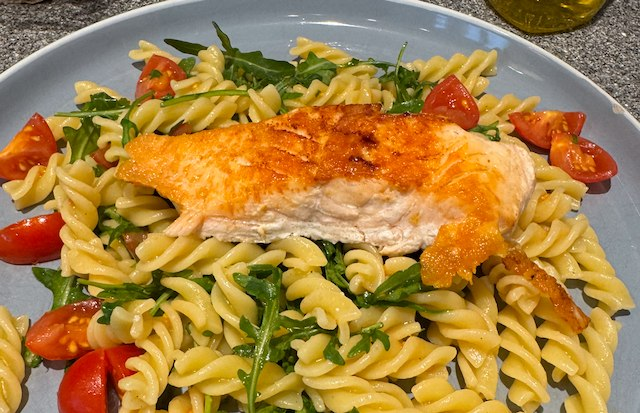

Salmon Pasta Salad

Serves: 4
Cook Time: 20 min
Ingredients
- 250g tomatoes, quartered, salt and pepper
- 4-6 salmon steaks
- 1 bag (~60g) rocket
- 500g pasta
- Dressing
- 6 tbsp olive oil
- 1 tbsp white wine vinegar
- ¼ tsp dijon mustard
Method
Cook the salmon. Heat the pan to hot, add olive oil and salmon steaks, skin side down. Salt and pepper the salmon. Turn heat down to medium and cook for 5 min or so, then flip and cook the other side for another 5 min. While this is going on, scrape off the salmon skin.
Make the dressing. Whisk together the olive oil, white wine vinegar and dijon mustard in a small bowl.
Cook the pasta following packet timings. I use 1 tbsp table salt and 1.5 litre of water.
Drain the pasta and add back to the pan. Mix in the dressing, then stir in the tomatoes and rocket.
Serve onto plates, with salmon on top.